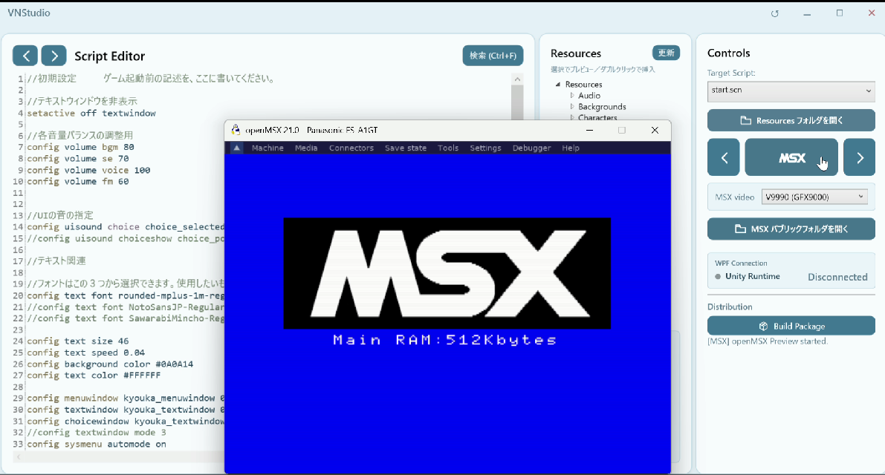

はじめに
MSXは、1983年に定められた家庭用コンピュータの規格である。特定の一社の製品名ではなく、複数のメーカーが同じ共通の仕様に沿って製品を作り、同じソフトが機種をまたいで動くことを約束した共通規格だった。その最終世代にあたるMSXturboRは、従来のZ80に加えてR800というより高速なプロセッサを積んでいる。今回、VN Studioに追加実装したのは、この規格の実機である。
前回は、PSPへの対応と、四つのランタイムを一つの起動操作へまとめた構成の見直しについて書いた。今回はそこへ新しく加わった、五つ目の実行先について報告したい。
ここでいう「ランタイム」は、作った物語の文章・画像・音声を読み取り、ゲームとして動かすプログラムのことである。MSX対応とは、VN Studioで制作した作品を、この規格の実機で——正確には、実機と同じ動き方をする環境で——遊べるようにする取り組みだ。
ただ、この工房の読者には、MSXという名前がまったくの初登場ではないことに気づく方もいるだろう。Vol.7で「夢のマシン」を語ったとき、その心臓に据えたV9990は、ヤマハが次期MSX用として開発を進めながら、正式採用されることなく幻に終わったビデオプロセッサだった。Vol.11では、そのXZ80のCPUコアがX1やMSXの上で動いたZ80と完全互換であることを書いた。Vol.9では、XakやフレイといったMSX2の作品が、わずかなFM音源とPSGでなぜあれほど鳴るのかを問うた。
今回のテーマはその中心へ向かってゆくものである。

第1章：夢のマシンから、生まれ故郷へ
Vol.7で制作したXZ80は、この世には存在しない架空のマシン（VM）だ。かつて相棒だったZ80を高速化し、幻のVDPであるV9990と組み合わせる。X68000が16ビットの力で実現した世界を、8ビットのZ80の世界へ持ち込む。「あの頃の自分が本当に欲しかったマシン」を、自分の手のひらの上にあるZ80で実現する——そういう試みだ。
架空の機械には、架空機ならではの自由がある。都合のよい装置を好きに定義できるのだ。平らなメモリを切り替えるポート、外部ディスクXDSKを呼び出すポート、二つ目のCPUを起こすポート、独自のPCM音源。物語を動かすには便利な道具ばかりで、これらはこれまでのdevlogで一つずつ紹介してきた。
だが今回向かうMSXは、実在する規格である。そしてV9990というチップは、もともとこのMSXという系譜のために設計されたものだった。夢のマシンは、いわばその幻のチップに架空のボディを貸していた。今回は逆に、そのチップが本来向かうはずだった実機ーMSXに実装したV9990カートリッジの上で動く。そしてVNStudioはそのボディの上で動作する。今回の作業を一言で言うなら、そういうことになる。
だからここで最初に決めたのは、足し算ではなく引き算だった。実機には、XZ80のために定義した便利な装置は存在しない。平らなメモリも、XDSKも、二つ目のCPUも、独自PCM/DMAも。取りうる道は二つある。エミュレータに架空の装置を足して「動くこと」を優先するか、実機に無いものは持ち込まず、その機械が本来持っている仕組みだけで組み直すか。
後者を選んだ。背景も立ち絵も、標準のI/O範囲とレジスタだけを使うV9990へ。入力はBIOS経由のキー読み出しへ。保存はカートリッジのフラッシュ領域へ。音は、その機械に載る音源へ。XZ80が架空機だからこそ定義できた便利な装置を、MSX側のコードへ一つも持ち込まないと決めた。
これは遠回りに見えて、実機で動くことを目標にする限り前提だった。道具が透明であるとは、内部の複雑さを引き受けて使う人に見せないことだが、それは「本当は無いもの」を有るように偽ることではない。土台にある機械の事実を、まず正しく受け取る。夢のマシンで先に予行演習をしていたからこそ、いま本物の系譜へ、無理なく渡っていける。
第2章：同じ意味を、違うボディで
とはいえ、物語そのものまで作り直すわけにはいかない。作品を機種ごとに書き分けていては、書く時間が移植に食われてしまう。
そこで、共通にするものと、機種ごとに分けるものの境界をはっきり引いた。共通にするのは「意味」だけにする。命令の番号と並び、比較の仕方、変数と呼び出しの積み方、一度に実行する命令の数——物語がどう進むかという約束は、XZ80・PSP・X68000・MSXで同じにする。命令番号はMSX側のアセンブリへ手で書き写さず、コンパイラが出力する定義ファイルを共有し、両者が食い違えば試験が止まるようにした。
一方、その意味を「どう見せ、どう鳴らし、どう保存するか」は、機種ごとのボディに委ねる。画面、入力、時間、保存、音——これらは抽象化した層(HAL)を境にして、その先をV9990やPSGやフラッシュの実装へ振り分ける。
ここで、XZ80が最初からV9990を土台に設計されていたことが効いてくる。V9990向けの画像形式やパレット変換、シーンの進行、演出の状態の持ち方は、架空機のために作ったものであっても、実機のV9990でそのまま意味を持つ。幻のチップへ向けて書いた資産が、生まれ故郷でも通用する。移植が現実的な作業として成立したのは、この下地があったからだ。
この「意味だけを共通化し、ボディは分ける」という線引きは、設計の思想そのものでもある。共通化しすぎれば、どの機種にも最適化できない中途半端な一つの実装になる。分けすぎれば、同じ物語が機種ごとに別の作品になってしまう。同じ台詞、同じ選択肢、同じ分岐を保ちながら、その機械にふさわしい姿で立ち上がること。共通の魂と、固有のボディ。移植とは、この二つを取り違えないための作業だったと言ってよい。
第3章：小さな画面の中で、絵を組む
V9990では、標準のビットマップ画面である384×240を使う。上の176行を背景と立ち絵のシーン領域、下の64行を常設のテキスト領域とした。XZ80の全画面背景とは構成を変え、X68000版と同じ論理レイアウトへ揃えている。
限られた画面と、限られた転送速度の中では、「毎回すべてを描き直さない」ことが品質に直結する。背景を変えるときはシーン領域だけを更新し、下のテキスト窓は保持する。立ち絵を差し替えるときは、前の矩形の背景を復元し、新しい矩形だけを重ねる。テキスト窓や選択肢の枠は固定して、中央だけを伸縮させる。VRAMの表示外領域を退避場所として使い、一度転送した画像を読み直さずに復元する。どれも、限りある帯域を物語の進行のために温存するための工夫である。
文字は、XZ80と共有する7171字ぶんの日本語フォントをそのまま持ち込んだ。UTF-8の台詞から一字ずつ字形を引き、下の領域へ描く。右端で折り返し、ページの下端で一度待ち、次の入力で消して続ける。
絵の変換にも、できるだけオリジナルに忠実であることをめざしながら、工夫を重ねた。マスクの取り方を直し立ち絵の転送を1行ずつ偶数行・奇数行の二巡に分けて、画像表示にかかる待ち時間を演出に変えた。これは往年の作品群を参考にしたものだが、心理的効果がとても大きいものになり、意図せず過去の作品の実装の正しさを証明する形になった。
こうした作業は、16KBという先頭バンクのわずかな容量とのせめぎ合いでもある。現在の使用量は、V9990で16384バイト中16089バイト、開発中のV9968では16378バイトまで来ており、すでに残りは数バイトしかない。数十バイトを削るために、確認済みの検証処理を実行時から省くといった判断を、一つずつ重ねながら実装をすすめていった。かつて夢として語った384×240ドット・32768色中256色という数字の裏には、こうしたバイト単位の実装の制限という現実がある。
第4章：演出の間合いを、そろえる
前回のPSP対応でも書いたことだが、命令が実行できることと、同じ場面になることは別である。この違いは、MSXでも演出に最もよく表れた。
画面を揺らす演出は、揺れている間もスクリプトを止めない。V9990の表示位置レジスタを使って全体を振動させ、その裏で台詞や移動が同時に進む。前回、PSPで「揺れ終わってから人物が話し始める」ずれを直したのと同じ考え方を、別の機械の別のレジスタで通した。移動、背景スクロールも、終端で一度だけ絵を整える。
ノベルゲームでは、こうした短い時間差が会話のテンポや印象を変えてしまう。機種が変わっても、その場面をどう感じてほしいかは変わらない。装置は違っても、間合いだけは可能な限り合わせていく。
第5章：その機械の音源で、鳴らす
音は、MSXという機械の性格が最も出るところだった。V9990は映像の装置であって、音は鳴らさない。XZ80の独自PCMも、ここへは持ち込めない。だからこの機械に載る音源で鳴らす。効果音はPSGで、BGMはMSX-MUSIC(OPLL/YM2413)で。既存のMMLを、この音源向けの中間形式へ変換して用意する。
このOPLLは、Vol.14やVol.15で扱ったFMPACの系譜にあたる音源である。Vol.9では、XakやフレイといったMSX2の作品が、わずか2オペレータのFM音源とPSGで、まるで一台のシンセサイザーのように鳴っていたのはなぜかを問い、音源ドライバが単なる再生装置ではなく、楽曲の表現そのものを形作るロジックだったからではないか、という仮説を書いた。あのとき文章で追いかけた音を、いま、それが実際に鳴っていた系譜の機械の上で組み立てている。
音の作業は正直であることが試される作業でもある。別途生成したMP3のBGMをこのFM音源ドライバで鳴らすための変換プログラムを試作を重ねて、ほぼ使えると思えるレベルに至った。これで移植にかかる作業は大幅に減らすことができたが、細かい修正作業はこれからである。
もう一つ、turboRでは音声(ボイス)を鳴らせる。XZ80で作ったADPCMの仕組みをそのまま流用した。だがMSXにはDMAがないため、効果音以上の音声などの大きなデータの転送は、CPUがタイミングを図りながら都度転送するしかない。最初はうまくいかず、背景や立ち絵を読み込んでいる間に音声が途切れたり不具合が連発した。なんども改善を重ねて読み込みの合間からも音を注ぎ足せる作りへ設計し直した。BGMがロード中に止まる最長の停滞は約10秒から数十ミリ秒へ、音声は三つの対象すべてで11.60秒・欠落ゼロになった。
古い機械の音を、懐かしい音色として飾るのではなく、その機械が実際に鳴らせる音として、途切れさせずに届ける。Vol.9で「サルベージ」と呼んだ営みは、当時の響きを標本として保存することではなく、その仕組みを今の手で扱えるようにすることだった。今回の音の作業も、その続きにある。
第6章：容量という、動かせない現実
理想と実装を混同しないためには、動かせない現実を正面から測るしかない。MSXでそれは、容量として現れた。
作品データを収めるカートリッジ(ASCII16-X)の実容量は、8MiBだった。ツール上は16MiBのイメージも作れるが、エミュレータに与えると青画面で止まり、上位のバンクが先頭へ折り返してしまう。上限の数字を書き換えても意味はない、という事実を実測で確かめた。一方、音声まで含めた作品は、V9990版で10.7MiB、高解像度版で9.9MiBを必要とする。当面は後ろの音声から省いて8MiBへ収め、何を省いたかを警告で示す形にしている。
では、Vol.17で紹介したXZ80のXDSKのような大容量ストレージを、実機で実現できないか。結論から言えば、XDSKそのものは移植できない。あれはXZ80という架空機だから定義できた「アセットを丸ごとRAMへ転送する装置」で、対応する実機の部品が無いからだ。第1章で決めた原則が、ここでも効いている。
代わりの道として、SDカートリッジとNextor——MSX-DOS 2互換の、再配布できるファイル管理カーネル——のファイルAPIに乗る方法を検討し、概念実証を動かした。エミュレータ上で、カートリッジからファイル経由で6.6MBの実データを読み、内容が一致することと速度を測った。R800で毎秒321KiB、Z80で119KiB。実機で動く形の見通しは立った。
ただし、ここにも動かせない事実があった。ファイルを一回読むBDOSの呼び出しは、128バイトでもR800で平均2.3ミリ秒かかる。細かく刻んでも1ミリ秒を切れない。いまの音声は「1ミリ秒ごとにDACを叩く」方式だから、音声を鳴らしながらディスクに触れば、必ず音が途切れる。だから設計はこうなる——音声の前に、必要なデータをRAMのキャッシュへ先読みしておき、再生中はディスクに一切触らない。XZ80のXDSKが「キャッシュバンクへ転送する」発想だったのと、行き着く形は同じだった。架空機で自由に描いた設計思想が、実機の制約の中で作法を変えて再発見される。この往復が、移植のいちばん面白いところかもしれない。
このファイル版はまだ計画と概念実証の段階であり、当面はカートリッジ内での圧縮と併用しながら進めていく。
第7章：確かめ方を、正直に保つ
これらの動作は、openMSXという定評あるエミュレータの上で確認している。起動から最初のフレーム、指定した機種と拡張の存在、画面のピクセル単位の照合、キー入力、メモリ値やVMの位置の読み出し、セーブ後の状態比較までを、自動で回せるようにした。現在、MSX側のカートリッジ試験は46件が通っている。
同時に、確かめられていないことも書いておきたい。ここまでの確認はエミュレータ上のものであり、実機での聴感と表示の確認はまだ行っていない。主対象としているのはturboRとV9990の組み合わせで、V9958版やMSX1版、そして開発中の新型VDPであるV9968版は、共通の意味を保ったままプロファイルの切り替えで生成することを見据えた将来の対象である。V9968については、対応する開発版のエミュレータを使うことも含め、参照した仕様版やその由来を成果物へ記録するようにしている。
Vol.7で夢のマシンを語ったとき、その先にはFPGAによる実機化という未来を置いた。実機で本当に動くところまで見届けたいという願いは、あのときから今も変わっていない。だからこそ、道具が透明であることと、確認できていないことを有るように語ることは、はっきり分けておきたい。何がどこまで確かめられたのか、その境界を正直に保つこと自体が、作る人と遊ぶ人への誠実さだと考えている。
おわりに：昔の夢を、いまの手で
MSX対応を進める中で、映像の組み方、演出の間合い、音源の鳴らし方、容量の測り方、確かめ方と、いろいろなところへ手を入れた。振り返ると、そのどれもが「昔見た夢を、いまの技術で、自分の手で扱えるようにする」という一点につながっている。
Vol.7で、幻のVDPに架空のボディを与えて夢のマシンを建てた。Vol.9で、失われた音の仕組みをサルベージしようとした。Vol.14やVol.15で、その音を鳴らすドライバを組んだ。今回はそれらが、V9990というチップの生まれ故郷である実機の系譜の上で、一つに合流した。夢のマシンは、実機へ渡るための予行演習でもあったのだと、いまになって思う。
決められた性能の機械へ物語を渡す作業は、便利な装置を足すことではなく、その機械に無いものを持ち込まないと決め、有るものだけで組み直すことだった。そうして初めて、共通の意味と固有のボディという線が引けた。同じ物語が、違うボディで、その機械らしく立ち上がる。
古い機械を扱うのは、過ぎた時代を懐かしむためではない。その時代の創作の手触りと仕組みを受け取り、いまの制作の中で生かすためだ。記録が人の思いを未来へつなぐように、古い規格の作法を受け継ぐことも、これからの作品づくりへつながっていく。
物語を作ることと、それを形にする道具を作ること。その両方を続けながら、届けられる場所を、また一つ増やした。次は、この機械の中で、作品を最初から最後まで気持ちよく動かしきるところへ進んでいこうと思う。